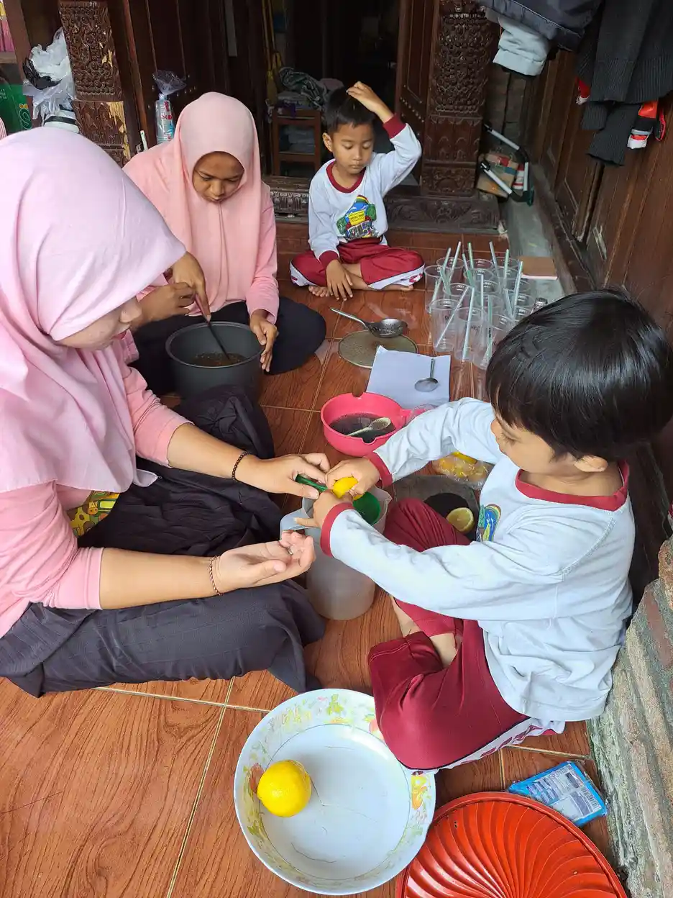
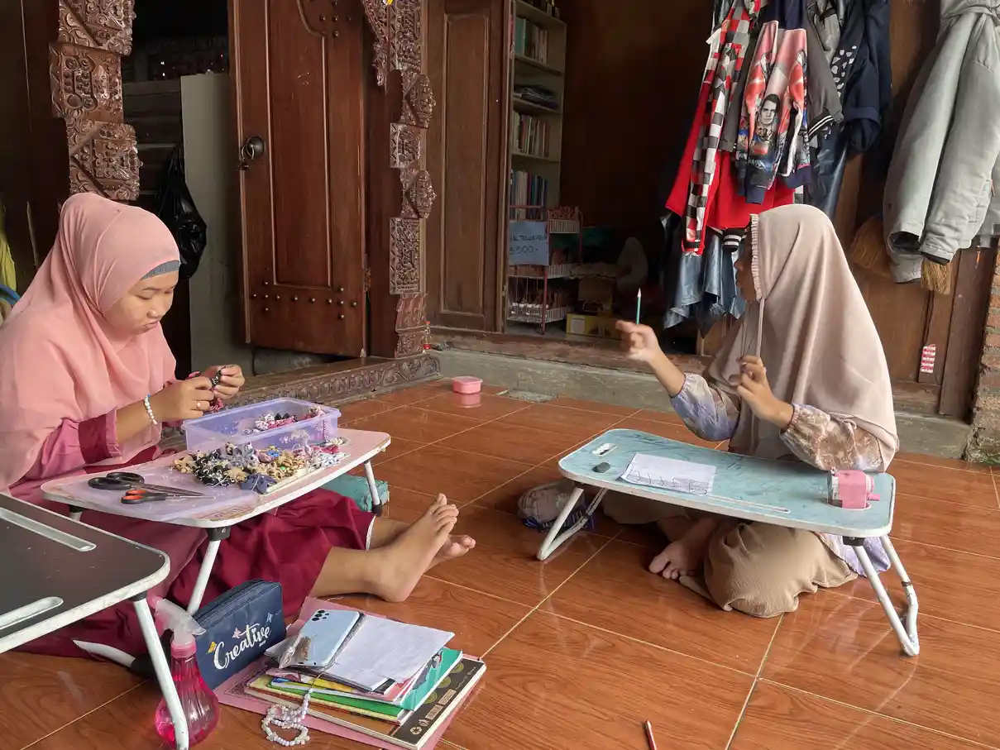
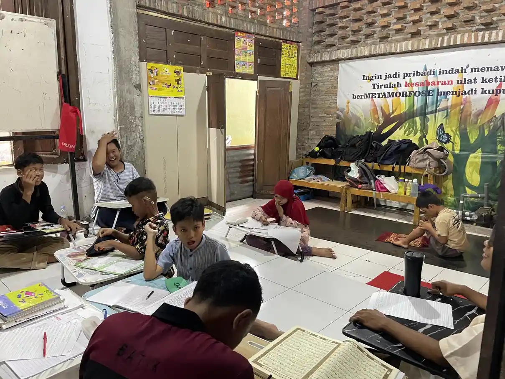

Menjaga hubungan suami istri dengan anak ABK bukan berarti mengabaikan kebutuhan anak. Justru hubungan pasangan yang dirawat dapat menjadi salah satu sumber tenaga bagi keluarga. Kuncinya bukan mencari pasangan yang selalu sepakat, tetapi membangun cara bekerja sama ketika jadwal terapi, kebutuhan sekolah, dan emosi anak menguras energi.
Orang tua anak berkebutuhan khusus dapat mengalami kurang tidur, beban biaya, ketidakpastian masa depan, komentar keluarga besar, dan pembagian tugas yang tidak seimbang. Bila percakapan pasangan hanya terjadi saat ada masalah anak, keduanya mudah merasa menjadi rekan kerja tanpa sempat kembali menjadi suami dan istri.
Keselamatan tetap prioritas
Perbedaan pendapat masih dapat dibicarakan. Kekerasan, ancaman, kontrol finansial, atau rasa takut bukan sekadar masalah komunikasi. Jika ada kekerasan terhadap perempuan atau anak, cari bantuan dan gunakan layanan resmi seperti SAPA 129. Keselamatan tidak boleh ditunda demi menjaga tampilan keluarga.
Daftar Isi
Mengapa Pasangan Mudah Menjauh?
Ketika kebutuhan anak tinggi, orang tua cenderung masuk ke mode bertahan: siapa yang mengantar, siapa yang menyiapkan makan, siapa yang menemani terapi, dan siapa yang menjawab pesan sekolah. Mode ini penting untuk melewati hari, tetapi bila berlangsung terus, hubungan pasangan kehilangan ruang untuk percakapan yang tidak berisi daftar tugas.
American Academy of Pediatrics melalui HealthyChildren.org menjelaskan bahwa kondisi kronis atau disabilitas dapat memengaruhi seluruh keluarga. Dukungan dari dokter, psikolog, pekerja sosial, keluarga besar, kelompok dukungan, dan komunitas dapat membantu keluarga memproses masalah. Meminta bantuan bukan bukti pasangan gagal mengasuh anak.
Pasangan juga dapat memiliki cara berduka dan menyesuaikan diri yang berbeda. Satu orang banyak mencari informasi, sementara yang lain diam. Satu orang ingin segera mencoba layanan, yang lain takut biaya atau kecewa lagi. Perbedaan ini tidak otomatis berarti salah satu tidak peduli. Yang perlu dibangun adalah ruang untuk memahami alasan di balik respons tersebut.
Menyusun Peta Kebutuhan Keluarga
Pilih waktu 20 sampai 30 menit ketika anak aman dan tidak ada janji yang mendesak. Tulis kebutuhan keluarga dalam empat kelompok: kebutuhan anak, kebutuhan rumah tangga, kebutuhan masing-masing orang tua, dan kebutuhan hubungan pasangan. Hindari langsung mencari solusi. Tahap pertama cukup menyamakan peta.
Contoh pertanyaan yang dapat dijawab bersama:
- Bagian hari apa yang paling sering membuat keluarga kewalahan?
- Tugas apa yang hanya diketahui oleh satu orang karena informasinya tersimpan di kepala?
- Kapan masing-masing orang tua terakhir beristirahat tanpa merasa harus siaga?
- Aktivitas sederhana apa yang masih membuat pasangan merasa dekat?
- Siapa orang yang dapat dihubungi jika salah satu orang tua sakit atau kelelahan?

Foto ini bukan dokumentasi keluarga tertentu yang sedang menjalani kondisi ABK. Ia hanya menggambarkan kegiatan bersama sebagai contoh visual. Dalam praktiknya, aktivitas dipilih berdasarkan usia, kemampuan, sensorik, dan minat anak.
Membagi Beban yang Terlihat dan Tidak Terlihat
Pembagian tugas sering gagal karena yang dibagi hanya pekerjaan fisik. Beban yang tidak terlihat juga perlu dihitung: mengingat jadwal, mengisi formulir, mencari informasi, menghubungi guru, menyimpan hasil asesmen, membeli perlengkapan, dan memikirkan rencana jika anak sakit.
Buat daftar mingguan, lalu sepakati tiga hal: pemilik tugas, batas waktu, dan rencana cadangan. Pemilik tugas berarti orang yang memastikan tugas selesai, bukan berarti ia harus selalu mengerjakan semuanya sendiri. Misalnya, satu orang memegang komunikasi sekolah, sementara pasangannya menyiapkan dokumen dan mengantar saat jadwal bertabrakan.
Adil tidak selalu berarti 50:50 setiap hari. Pembagian dapat berubah sesuai jam kerja, kondisi kesehatan, atau kebutuhan anak. Yang penting perubahan dibicarakan, bukan diasumsikan. Periksa daftar seminggu sekali dan tanyakan, "Apakah pembagian ini masih masuk akal?" bukan, "Mengapa kamu tidak membantu?"
HealthyChildren.org menekankan pentingnya komunikasi yang jelas dan positif di rumah. Dalam konteks pasangan, kalimat yang spesifik lebih membantu daripada tuduhan umum. Katakan, "Aku membutuhkan kamu mengambil alih rutinitas mandi malam ini," daripada, "Kamu tidak pernah membantu."
Membicarakan Perbedaan Pengasuhan
Perbedaan pendekatan dapat muncul pada disiplin, penggunaan gawai, pilihan terapi, sekolah, atau cara merespons ledakan emosi anak. Child Mind Institute membedakan perbedaan gaya yang masih dapat dinegosiasikan dari konflik yang berakar pada kurangnya niat baik atau rasa hormat.
Gunakan aturan percakapan tiga langkah:
- Mulai dari tujuan bersama. Contoh: "Kita sama-sama ingin anak aman dan belajar mengelola transisi."
- Pisahkan fakta dari kekhawatiran. Tulis apa yang benar-benar terjadi, kapan terjadi, dan apa yang sudah dicoba. Hindari label seperti malas, keras kepala, atau tidak peduli.
- Pilih uji coba terbatas. Sepakati satu strategi selama satu atau dua minggu, tentukan tanda yang diamati, lalu evaluasi. Tidak semua keputusan harus menjadi keputusan seumur hidup.
Jangan menjadikan anak sebagai hakim atau kurir konflik. Hindari bertanya kepada anak siapa yang benar, menyampaikan pesan melalui anak, atau membantah pasangan di depan anak bila percakapan dapat ditunda. Jika harus berbeda di depan anak, tunjukkan bahwa orang dewasa dapat berhenti, menarik napas, dan membicarakan ulang dengan aman.

Menjaga Waktu Berdua dengan Cara Realistis
Waktu berdua tidak harus berupa makan malam mahal atau perjalanan jauh. Banyak pasangan menunggu keadaan benar-benar longgar, lalu tidak pernah punya waktu. Mulailah dengan bentuk yang dapat dilakukan: minum teh 15 menit setelah anak tidur, berjalan singkat bergantian, menonton satu episode, atau mengirim pesan yang tidak berisi urusan terapi.
Child Mind Institute menyarankan pasangan orang tua anak dengan kebutuhan kesehatan mental untuk melindungi hubungan mereka dan memiliki waktu bersama tanpa selalu membicarakan anak. Prinsipnya bukan menghindari tanggung jawab, melainkan mengingat bahwa hubungan pasangan juga perlu dirawat agar keduanya memiliki tempat untuk pulih.
Sepakati waktu yang dilindungi dan rencana cadangan. Bila anak membutuhkan pengawasan terus-menerus, libatkan orang yang sudah dikenal dan memahami kebutuhannya. Jika belum ada pengasuh yang aman, buat versi mikro di rumah. Sepuluh menit yang benar-benar hadir lebih bermakna daripada dua jam yang diisi telepon kerja dan rasa bersalah.

Buat aturan sederhana untuk waktu berdua, misalnya tidak membahas masalah besar selama sepuluh menit pertama atau masing-masing menyebutkan satu hal yang dihargai dari pasangan. Bila salah satu sedang sangat lelah, fokus pada kehadiran dan bukan produktivitas.
Kapan Perlu Melibatkan Keluarga atau Profesional?
Mintalah bantuan sebelum konflik menjadi krisis. Tanda keluarga membutuhkan dukungan tambahan antara lain pertengkaran berlangsung hampir setiap hari, salah satu orang tua merasa sendirian memikul semua tugas, komunikasi selalu berujung ancaman, tidur dan pekerjaan terganggu, atau pasangan sudah tidak mampu membicarakan kebutuhan anak tanpa saling menyalahkan.
Mulai dari sumber yang paling mudah dijangkau: dokter anak, psikolog, psikiater, pekerja sosial, guru, kelompok orang tua, atau keluarga yang dapat dipercaya. Konseling pasangan dapat membantu menyusun komunikasi dan pembagian tugas, tetapi harus dilakukan dalam kondisi aman. Jika ada kekerasan, dukungan keselamatan dan layanan perlindungan lebih mendesak daripada konseling bersama.
Siapkan informasi agar bantuan tidak dimulai dari nol: jadwal anak, tugas yang paling berat, konflik yang berulang, dukungan yang sudah ada, dan hasil yang ingin dicapai. Tujuannya bukan mencari pasangan yang harus disalahkan, tetapi membuat sistem keluarga lebih aman dan dapat dijalankan.
Checklist percakapan mingguan
- Satu hal yang berjalan baik minggu ini.
- Satu tugas yang paling menguras tenaga.
- Satu bantuan konkret yang dibutuhkan dari pasangan.
- Satu waktu singkat untuk berdua.
- Satu keputusan yang perlu dibicarakan dengan tenaga profesional atau sekolah.
Pertanyaan yang Sering Diajukan
Apakah merawat hubungan pasangan berarti mengurangi perhatian kepada anak?
Tidak. Hubungan pasangan yang lebih terawat dapat membantu orang tua berbagi informasi, mengurangi kelelahan, dan bekerja lebih konsisten. Waktu berdua bisa sangat singkat dan perlu disesuaikan dengan keamanan serta kebutuhan anak.
Bagaimana jika pasangan tidak mau membagi tugas?
Mulai dengan daftar tugas yang konkret dan percakapan pada waktu tenang. Jelaskan dampak tugas yang belum terbagi dan minta satu perubahan spesifik. Jika pola tidak berubah atau disertai penghinaan, ancaman, kontrol, atau kekerasan, cari bantuan profesional dan dukungan keselamatan.
Apakah kami harus selalu memakai cara pengasuhan yang sama?
Tidak harus identik, tetapi aturan keselamatan dan pesan utama perlu konsisten. Perbedaan kecil dapat dibicarakan melalui uji coba terbatas. Hindari merendahkan pasangan di depan anak atau membuat anak memilih pihak.
Kapan konseling pasangan tidak aman?
Konseling bersama tidak menjadi pilihan pertama bila ada kekerasan, ancaman, ketakutan, atau kontrol yang membuat salah satu pihak tidak bebas bicara. Utamakan layanan perlindungan, pendamping yang aman, dan rencana keselamatan.
Pendampingan di YUKA
YUKA mendampingi pendidikan inklusi dan dapat menjadi salah satu sumber informasi pendidikan bagi keluarga. YUKA bukan layanan konseling pasangan, diagnosis, atau penanganan kekerasan. Untuk kebutuhan medis dan psikologis, hubungi tenaga profesional. Untuk informasi program pendidikan, kunjungi Sekolah Inklusi Taruna Imani Sleman dan halaman konsultasi ABK Sleman.
Artikel Terkait
Sumber dan Referensi
- How Chronic Illness or Disability Affects a Family, American Academy of Pediatrics / HealthyChildren.org
- How to Protect Your Marriage from a Child’s Mental Health Disorder, Child Mind Institute
- Resolving Parenting Disagreements, Child Mind Institute
- Communication Skills Start at Home, American Academy of Pediatrics / HealthyChildren.org
- SAPA 129, Kementerian Pemberdayaan Perempuan dan Perlindungan Anak
Disclaimer: Artikel ini bersifat edukasi umum dan bukan pengganti diagnosis, konseling, atau pengobatan dari dokter, psikolog, atau psikiater. Sumber dicek pada 27 September 2026.